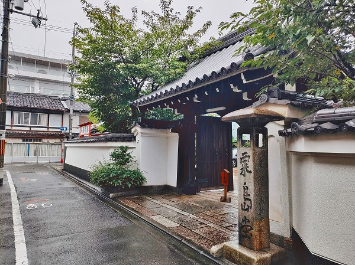
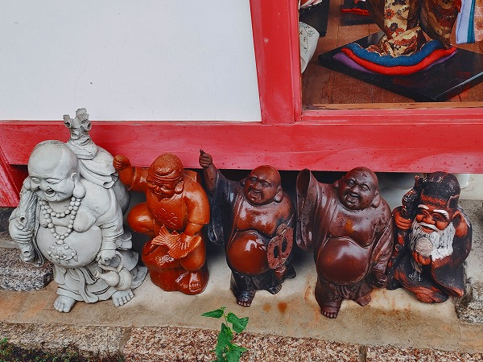

京都駅のすぐ近くに
粟嶋堂という場所がある。

京都駅から歩いても約10分！
エキチカ物件である。
女性の守り神、粟嶋大明神を祀っている。
訪れたこの日は物凄い豪雨で京都駅からわずか徒歩10分なのにすでにずぶ濡れ。
朝なのに早くも風呂に入りてえ…。
悪天候ゆえ防水防滴じゃないメインカメラはとてもカバンから出せず、防水機能付きのスマホで撮影しました。勘弁な。
そのスマホも画面がびちゃびちゃになってしまい、起動も操作も大変だったのだが。

さて。
愚痴はこの辺で。
この粟嶋堂、約600年前に
和歌山の粟嶋神社から勧請しているのが、ここは宗徳寺という仏教寺院の境内。
以前は宗徳寺の鎮守の粟嶋神社として祀られてきたが、明治の神仏分離令により粟嶋神社と名乗ることも出来ず、粟嶋堂という呼び方になった。
今では仏教形式の御堂の前に朱塗りの小社とおびんずるさまが並ぶ不思議な佇まいとなっている。
結局、明治政府が躍起になって神道と仏教を分離しようとしたところで、それまで神仏を一緒くたに信仰していた人達や社寺にしてみれば分離すること自体ナンセンスだったのだろう。
そこまで日本の宗教シーンは神仏混淆が進んでいたのだ。
そりゃあ室町時代に勧請してきた神様を今更寺から分けろ、と言われてもねえ。無理ですよ。
さして広くない境内には
沢山の人形が奉納されていた。
京都の人からは「あわしまさん」と呼ばれて信仰を集めている。
特に婦人病平癒、子授け、安産、良縁などに特化した御利益があり、女性の信仰を集めている。
与謝野蕪村もここを訪れて娘の病気平癒を祈願したそうな。
和歌山の粟嶋神社も人形供養の神社として有名だが、ここも日本人形を中心に様々な人形が奉納されている。
日本人形やひな人形、民芸人形、こけし、ジャンル別に分けられて並んでいる。

布袋さんだけ集められている。
市松人形が並んでいる。
何だろう、この日本人形独特の不気味さは。
あ、西洋人形も結構キてますね。
一際大きな市松人形はじっと見ていると動きそうでチョット恐い。
後に控える人形。
特に男児の人形がビンビン来ますね。
ガラス越しに人形を撮影したら、後に停まっていた自動車が映りこんでしまい、車に人形が乗っている心霊写真みたいな写真が撮れちゃいました。
天気の悪い日に行くもんじゃないですね…。
あまりにも雨が酷くなってきて結局タクシー拾って宿まで戻って風呂入って昼寝してました。